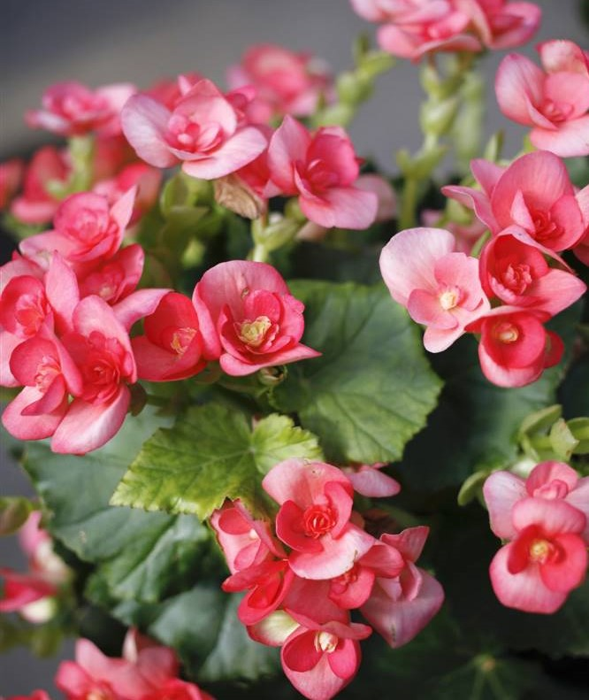

🌷 🌼 🌻 🌳 🌺 PLANTAS 🌺 🌳 🌻 🌷 🌼
Caléndula
La caléndula es originaria de Asia y el sur de Europa y se ha utilizado tradicionalmente en los sistemas de medicina ayurvédica y Unani. Los químicos de la caléndula pueden ayudar a que crezca tejido nuevo en las heridas y a disminuir la hinchazón en la boca y la garganta.
Albahaca
La albahaca es una hierba aromática rica en aceites esenciales como el geraniol, eugenol y linalool, además de poseer buenas cantidades de taninos, saponinas y flavonoides, con propiedades antiespasmódicas, digestivas, diuréticas, sedantes y antioxidantes, las cuales ayudan a prevenir y a combatir problemas de salud como gripes, presión alta, infarto o insomnio.
Azaleas
Las azaleas son plantas originarias de zonas boscosas y húmedas de alta montaña, donde vegetan espontáneamente junto a cursos de agua y en posiciones sombreadas, a altitudes incluso superior a los 400 m. La flor tiene una copa formada por 5 sépalos y una corola con 5 pétalos, que en las formas dobles pueden ser numerosos; las flores se encuentran en la axila de las hojas o asociadas en inflorescencias en corimbo.
Gardenia

Las gardenias son unas plantas de la familia de las rubiáceas originarias de china. Son arbustos de hojas de color verde claro, brillantes y lisas. Sus flores son blancas, similares a las rosas y se utilizan comúnmente como plantas ornamentales. Uno de los principales requerimientos de cultivo es que necesitan crecer en tierras ácidas compuestas de hierro y con abundante humedad.
Menta
La menta, es un arbusto aromático que pertenece a la familia del romero y lavanda. Es un híbrido estéril, un cruce entre la menta acuática y la menta verde. Por lo tanto, la planta no se puede cultivar a partir de semillas y sólo puede propagarse vegetivamente. La planta crece durante la primavera y el verano, produce hojas de menta perfumadas que son ricas en aceite escencial. El aceite escencial de la menta se utiliza ampliamente para dar sabor a refrescos, helados, pastas dentales, productos de tabaco, etc.
Agapanto
El agapanto, es una planta que llega cada verano, emerge y florece con unos tallos rígidos y unas preciosas cabezas florales esféricas en tonos, normalmente azules y blancos. La densidad de las tonalidades puede variar, sobre todo la azul. Se caracteriza por tener hojas muy grandes y anchas, y unas inflorescencias muy altas, de color blanco y azul.
Boca de Dragón
La boca de dragón es es una especie de planta de la familia de las plantagináceas nativa del Mediterráneo (desde Marruecos, Portugal y sur de Francia, hasta el este de Turquía y Siria). Estas plantas se caracterizan por sus vivas flores agrupadas en racimos. Estas flores son las que le dan nombre a la planta ya que tienen forma de boca o morro de dragón. Además, si las presionas por los lados ligeramente con los dedos, la flor se abre como si se tratará de una boca. Los colores de las flores son muy variados. Van desde el blanco hasta el morado, pasando por amarillos, rosas o naranjas. Combinan dos o más colores que van del más oscuro en los extremos de la flor al más claro en el centro.
Begonias
 Su nombre científico es Begonia semperflorens, más conocida comúnmente como begonia. Es una planta de interior con flor procedente de regiones tropicales de Asia, África y Sudamérica. Es un género muy prolífico del que se conocen más de 1.500 especies, entre ellas, una de las más conocidas es la begonia maculata. Existen muchas variedades de begonias, y solo los expertos amantes de la jardinería saben distinguirlas y clasificarlas por su morfología.
Palmera de salón
La Palmera de Salón, Areca o científicamente Chamaedorea Elegans es una planta que poco a poco me ha ido conquistando, es muy común en invernaderos y centros de jardinería, vamos a descubrir su belleza, sus cuidados y algunas curiosidades que nos regala una planta muy bonita, pero sobre todo muy agradecida. Es una planta de origen selvático que se ha adaptado perfectamente al interior de nuestros hogares, no aguanta el frío, de modo que si la quisieras plantar en tu jardín has de asegurarte de que el clima es muy cálido, sitúala en una zona de sombra o semisombra, piensa que en la selva está muy protegida de los rayos del sol directo, precisa un suelo con buen drenaje, un tanto ácido y con muchos nutrientes.
Ficus

El ficus es una de las plantas de interior en tendencia por su frescura, su apariencia y una de sus grandes virtudes: mejora la calidad del aire. El ficus es una planta que proviene de bosques tropicales. Sus ramas son grandes y arqueadas, y sus hojas bastante puntiagudas lo que añade un toque de 'jungla' tropical a la casa. Además, uno de los motivos de su éxito en decoración es que se puede incluir en el interior. Aunque hay variedades del ficus que no llegan a superar el metro, hay otras que pueden alcanzar hasta los 3 metros de altitud.
Helecho
Estas plantas se destacan por ser plantas perennes sin semilla lo que podría complicar un poco su cuidado, pero la realidad es que son más sencillas de cuidar de lo que parece y lo mejor de todo es que según el Feng Shui son plantas que representan y atraen la buena suerte y la fortuna.
Gerberas
Es toda una inspiración floral, que nos llenará el hogar de energía positiva, alegría y entusiasmo.La gerbera goza de unos colores brillantes, alegres y muy variados: amarillo, rojo, naranja, rosa, morado, blanco, y mezclas de estos entre sí, el abanico es enorme. Es una planta resplandeciente que destaca con facilidad. Pero a la vez, es sencilla y nada arrogante, sino más bien se muestra honesta, y en consonancia con el resto de las flores.